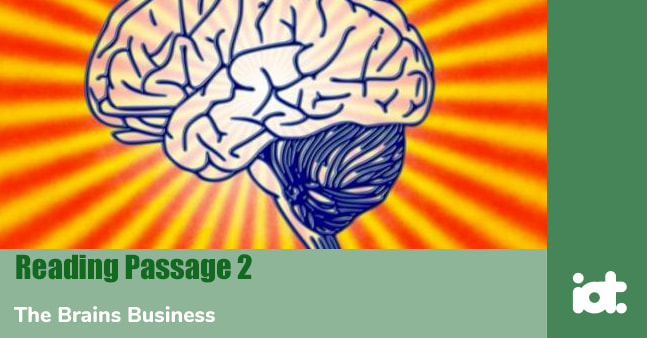
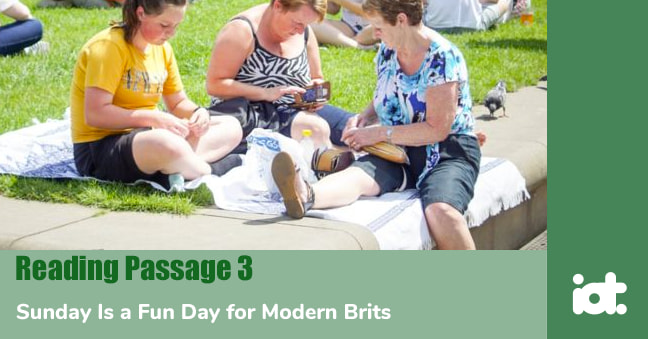

Part 1
Reading Passage 1
You should spend about 20 minutes on Questions 1 -13, which are based on Reading Passage 1 below.
Sleepy Students Perform Worse
A. Staying up an hour or two past bedtime makes it far harder for kids to learn, say scientists who deprived youngsters of sleep and tested whether their teachers could tell the difference. They could. If parents want their children to thrive academically, “Getting them to sleep on time is as important as getting them to school on time," said psychologist Gahan Fallone, who conducted the research at Brown Medical School.
B. The study, unveiled Thursday at an American Medical Association (AMA) science writers meeting, was conducted on healthy children who had no evidence of sleep- or learning-related disorders. Difficulty paying attention was among the problems the sleepy youngsters faced - raising the question of whether sleep deprivation could prove even worse for people with attention deficit hyperactivity disorder, or ADHD. Fallone now is studying that question, and suspects that sleep problems “could hit children with ADHD as a double whammy”.
C. Sleep experts have long warned that Americans of all ages do not get enough shuteye. Sleep is important for health, bringing a range of benefits that, as Shakespeare put it, “knits up the ravelled sleave of care”. Not getting enough is linked to a host of problems, from car crashes as drivers doze off to crippled memory and inhibited creativity. Exactly how much sleep correlates with school performance is hard to prove. So, Brown researchers set out to test whether teachers could detect problems with attention and learning when children stayed up late - even if the teachers had no idea how much sleep their students actually got.
D. They recruited seventy-four 6- to 12-year-olds from Rhode Island and southern Massachusetts for the three-week study. For one week, the youngsters went to bed and woke up at their usual times. They already were fairly good sleepers, getting nine to 9.5 hours of sleep a night. Another week, they were assigned to spend no fewer than ten hours in bed a night. The other week, they were kept up later than usual: First -and second-graders were in bed no more than eight hours and the older children no more than 6.5 hours. In addition to parents’ reports, the youngsters wore motiondetecting wrist monitors to ensure compliance.
E. Teachers were not told how much the children slept or which week they stayed up late, but rated the students on a variety of performance measures each week. The teachers reported significantly more academic problems during the week of sleep deprivation, the study, which will be published in the journal Sleep in December, concluded. Students who got eight hours of sleep or less a night were more forgetful, had the most trouble learning new lessons, and had the most problems paying attention, reported Fallone, now at the Forest Institute of Professional Psychology.
F. Sleep has long been a concern of educators. Potter-Burns Elementary School sends notes to parents reminding them to make sure students get enough sleep prior to the school’s yearly achievement testing. Another school considers it important enough to include in the school’s monthly newsletters. Definitely, there is an impact on students’ performance if they come to school tired. However, the findings may change physician practice, said Dr. Regina Benjamin, a family physician in Bayou La Batre, who reviewed the data at the Thursday’s AMA meeting. “I don't ask about sleep” when evaluating academically struggling students, she noted. “I’m going to start.”
G. So how much sleep do kids need? Recommended amounts range from about ten to eleven hours a night for young elementary students to 8.5 hours for teens. Fallone insists that his own second-grader get ten hours a night, even when it meant dropping soccer - season that practice did not start until 7:30 — too late for her to fit in dinner and time to wind down before she needed to be snoozing. “It’s tough,” he acknowledged, but “parents must believe in the importance of sleep."
Part 2
Reading Passage 2
You should spend about 20 minutes on Questions 14 - 26, which are based on Reading Passage 2 below.

The Brains Business
A. For those of a certain age and educational background, it is hard to think of higher education without thinking of ancient institutions. Some universities are of a venerable age - the University of Bologna was founded in 1088, the University of Oxford in 1096 - and many of them have a strong sense of tradition. The truly old ones make the most of their pedigrees, and those of a more recent vintage work hard to create an aura of antiquity. Yet these tradition-loving (or -creating) institutions are currently enduring a thunderstorm of changes so fundamental that some say the very idea of the university is being challenged. Universities are experimenting with new ways of funding (most notably through student fees), forging partnerships with private companies and engaging in mergers and acquisitions.Such changes are tugging at the ivy's roots.
B. This is happening for four reasons. The first is the democratisation of higher education “massification" in the language of the educational profession. In the rich world, massification has been going on for some time. The proportion of adults with higher educational qualifications in developed countries almost doubled between l975 and 2000. From 22% to 41%. Most of the rich countries are still struggling to digest this huge growth in numbers. Now massification is spreading to the developing world. China doubled its student population in the late 1990s, and India is trying to follow suit.
C. The second reason is the rise of the knowledge economy. The world is in the grips of a “soft revolution” in which knowledge is replacing physical resources as the main driver of economic growth. Between 1985 and 1997, the contribution of knowledge-based industries to total value added increased from 51% to 59% in Germany and from 45% to 51% in Britain. The best companies are now devoting at least a third of their investment to knowledge-intensive intangibles such as R&D, licensing, and marketing. Universities are among the most important engines of the knowledge economy. Not only do they produce the brain workers who man it, they also provide much of its backbone, from laboratories to libraries to computer networks.
D. The third factor is globalisation. The death of distance is transforming academia just as radically as it is transforming business. The number of people from developed countries studying abroad has doubled over the past twenty years, to 1.9 million; universities are opening campuses all around the world; and a growing number of countries are trying to turn higher education into an export industry. The fourth is competition. Traditional universities are being forced to compete for students and research grants, and private companies are trying to break into a sector which they regard as “the new health care”. The World Bank calculates that global spending on higher education amounts to $300 billion a year, or 1 % of global economic output. There are more than 80 million students worldwide, and 3.5 million people are employed to teach them or look after them.
E. All this sounds as though a golden age for universities has arrived. However, inside academia, particularly in Europe, it. does not feel like it. Academics complain and administrators are locked in bad-tempered exchanges with the politicians who fund them. What has gone wrong? The biggest problem is the role of the state. If more and more governments are embracing massification, few of them are willing to draw the appropriate conclusion from their enthusiasm: that they should either provide the requisite hinds (as the Scandinavian countries do) or allow universities to charge realistic fees. Many governments have tried to square the circle through lighter management, but management cannot make up for lack of resources.
F. What, if anything can be done? Techno-utopians believe that higher education is ripe for revolution. The university, they say, is a hopelessly antiquated institution, wedded in outdated practices such as tenure and lectures, and incapable of serving a new world of mass audiences and just-in-time information. “Thirty wars from now the big university campuses will be relics," says Peter Drucker, a veteran management guru. "I consider the American research university of the past 40 years to be a failure." Fortunately, in his view, help is on the way in the form of Internet tuition and for-profit universities. Cultural conservatives, on the other hand, believe that the best way forward is backward. They think it is foolish to waste higher education on people who would rather study "Seinfeld" than Socrates, and disingenuous to confuse the pursuit of truth with the pursuit of profit.
Part 3
Reading Passage 3
You should spend about 20 minutes on Questions 27 - 40, which are based on Reading Passage 3 below.

Sunday Is a Fun Day for Modern Brits
In a new study, Essex University sociologists have dissected the typical British Sunday, and found we get up later and do fewer chores than we did 40 years ago - and we are far more likely to be out shopping or enjoying ourselves than cooking Sunday lunch. Academics at the university’s Institute of Social and Economic Research asked 10,000 people to keep a detailed diary of how they spent Sundays in 2001. Then they compared the results with 3,500 diaries written in 1961, a treasure trove of information that had been uncovered ‘in two egg boxes and a tea chest’ in the basement of the BBC by ISER’s director, Professor Jonathan Gershuny.
The contrast between the two periods could not be more striking. Forty years ago, Sunday mornings were a flurry of activity as men and women - especially women - caught up on their weekly chores and cooked up a storm in the kitchen. Women rarely allowed themselves any ‘leisure’ until the afternoon, after the dishes were cleaned. In 1961, more than a fifth of all men and women in Britain were sitting at a table by 2 p.m., most likely tucking into a roast with all the trimmings. Then there would be another rush to the table between 5 p.m. and 6 p.m. for high tea.
Since the arrival of brunch, the gastropub and the all-you-can-eat Sunday buffet at the local curry house, such institutions have become extinct. Today, we graze the entire day. You only have two free days a week. You don’t want to have to waste one because there is nothing to do but watch TV. Sunday has leapfrogged Saturday in the fun stakes. On Saturdays, you are recovering from the week. Sundays are the last bastion of the weekend - you want to get as much as you can out of the day before you have to go back to work.
According to researchers, the ability to trail around B&Q has made the most dramatic difference to our Sundays. In 1961, adults spent an average of 20 minutes a day shopping; by 2001, it was 50 minutes. ‘Shopping used to be a gender segregated activity that would take place during the week, while the husband was at work. Now it’s as much men as women,’ said Gershuny. We’re all more likely to be relaxing or shopping on a Sunday morning these days than scrubbing the floor or putting up shelves. ‘Men now stay in bed longer, and get up not, as previously, to work around the house, but rather to shop or to pursue other outside leisure activities.’
Men do about the same amount of unpaid work around the house as they used to on a Sunday, but it’s spread throughout the whole day, instead of crammed into the morning. Women do considerably less than 40 years ago. Indeed, men and women were ‘pretty much different species’ in 1961, as far as the way they spent Sundays was concerned, with men far more likely to be out of the house - at the pub or playing football - before lunch. ‘For women, leisure happened only in the afternoon. But by 2001, the shapes of men’s and women’s Sundays were much more similar,’ says the report.
‘Sunday for me is all about holding on to the weekend and trying to stave off Monday. An ideal Sunday would involve getting up and having a nice lunch. Sometimes we cook, but more often I go out to get a roast or bangers and mash at a gastropub. If it is a nice day, there is nothing better than sitting outside in the beer garden, reading the Sunday papers - one tabloid and one broadsheet - with a Guinness, extra cold. Sunday is often a chance to visit other parts of London, as long as it is not too far. I use Sundays to go clothes shopping, or to the cinema. I often go to Camden market, as I love the international foods on offer and hunting for bargains and vintage clothes.’
Jonathan Bentley Atchison (25, Clapham, London, works in communications)
‘I am usually at home making the Sunday lunch. Some friends go out to eat, but my husband Mark loves a roast, so we don’t. After that, I do the washing, like every day, and then I take my daughter Grace to netball and watch her play. Mark potters around - last Sunday, he tidied the garage. He works six days a week, so on Sunday he stays at home. I don’t like shopping on a Sunday because every man and his dog is out. I don’t work, so I can do it in the week. I tend to watch television and chill out. When summer comes, we go to barbecues at family or friends’ houses. When I was growing up, my dad would do the gardening and paint the fences while my mum would do housework.’
Hazel Hallows (42, Manchester, housewife, married with three children)
‘When we were at home, I would get out in the garden, and my late wife Rose would cook the Sunday lunch and do the housework. I was an engineer, and Rose worked full-time as a supermarket manageress. In 1961, we had just moved to Bristol, and I spent Sunday maintaining the new house. The washing and ironing had to be done - it was a working-together atmosphere. We would sometimes go and spend the day with Rose’s sister or other relatives. In 1961, it was the first time I had a new car, so we spent time in the countryside or garden centres. Now, I get up on Sundays and spend a couple of hours reading the newspapers.’
Bryan Jones (79, pensioner, Frampton Cotterell, near Bristol)
Part 1
Questions 1-4
The text has 7 paragraphs (A - G).
Which paragraph contains each of the following pieces of information?
1. Traffic accidents are sometimes caused by lack of sleep.
2. The number of children included in the study
3. How two schools are trying to deal with the problem
4. How the effect of having less sleep was measured
Questions 5-8
Complete the following sentences using NO MORE THAN TWO WORDS from the text for each gap.
Fallone is now studying the sleep patterns of children with 5
The researchers used 6 that show movement to check that children went to bed at the right time.
Students with less sleep had problems with memory, remembering new material, and 7
Fallone admitted that it was 8 for children to get enough sleep.
Questions 9-13
Do the following statements agree with the information given in Reading Passage 1?
In boxes 9 - 13 on your answer sheet, write
| TRUE. | if the statement agrees with the information | |
| FALSE. | if the statement contradicts the information | |
| NOT GIVEN. | If there is no information on this |
9. The results of the study were first distributed to principals of American schools,
10. Some of the children in the study had previously shown signs of sleeping problems.
11. The study could influence how doctors deal with children’s health problems.
12. Fallone does not let his daughter play soccer.
13. Staying up later is acceptable if the child is doing homework.
Part 2
Questions 14-17
The text has 7 paragraphs (A - F).
Which paragraph does each of the following headings best fit?
14. Education for the masses
15. Future possibilities
16. Globalisation and competition
17. Funding problem
Questions 18-22
According to the text, FIVE of the following statements are true.
Write the corresponding letters in answer boxes 18 to 22 in any order.
Questions 23-24
What are TWO problems currently faced by universities, especially in Europe and globally?
Choose TWO letters, A–E.
Questions 25-26
What are TWO possible solutions proposed by reformists or conservatives?
Choose TWO letters, A–E.
Part 3
Questions 27-30
For each question, only ONE of the choices is correct.
Write the corresponding letter in the appropriate box on your answer sheet.
Questions 31-35
Complete the following sentences using NO MORE THAN THREE WORDS from the text for each gap.
Professor Gershuny discovered thousands of 31 at the BBC.
In 1961, people ate 32 at 5 or 6 o’clock.
In 2001, people spent 33 50 minutes on shopping on Sundays.
Shopping is something that is not as 34 as it was in 1961.
In 1961, men would often go for a drink or be 35 before lunch.
Questions 36-40
Do the following statements agree with the information given in Reading Passage 3?
In boxes 36 - 40 on your answer sheet, write
| TRUE. | if the statement agrees with the information | |
| FALSE. | if the statement contradicts the information | |
| NOT GIVEN. | If there is no information on this |
36. Mr. Atchison usually eats out.
37. Mrs. Hallows’ husband does no household chores on Sundays.
38. Mrs. Hallows thinks the shops are too busy on Sundays.
39. Mr. Jones is a widower.
40. Mr. Jones does household chores on Sundays.